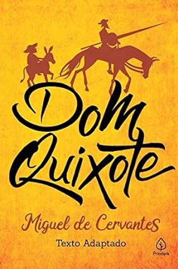

Sobre a Livraria - Capítulo certo
Bem-vindo à nossa Livraria Capítulo Certo, um refúgio para os amantes da leitura e um oásis para aqueles que buscam o conhecimento e a imaginação. Nossa livraria é mais do que apenas um lugar onde os livros se alinham nas prateleiras; é um universo de possibilidades que espera ser explorado.
Imagine-se entrando em um espaço repleto de histórias cativantes, onde cada virada de página revela um novo mundo. Nossas estantes abrigam uma vasta coleção de obras, desde os clássicos intemporais até as publicações mais recentes, abrangendo gêneros que vão desde a ficção à não-ficção, da poesia à ciência, e muito mais.
Na nossa livraria, a paixão pela literatura e o desejo de compartilhar histórias são os pilares que sustentam cada canto do espaço. Seja você um leitor ávido em busca da próxima aventura literária ou alguém que deseja explorar o mundo dos livros, estamos aqui para tornar sua jornada alternativa.
Visite-nos e permita que as páginas ganhem vida.
-
"Dom Quixote" de Miguel de Cervantes:
Dom Quixote é um cavaleiro idealista que acredita ser um herói medieval em um mundo moderno e busca aventuras com seu fiel escudeiro Sancho Pança.
-
"1984" de George Orwell:

Em um Estado totalitário distópico, Winston Smith luta contra a opressão do Partido, mas acaba sendo submetido a torturas psicológicas que quebram sua resistência.
-
"O Grande Gatsby" de F. Scott Fitzgerald:

A história segue a vida de Jay Gatsby, um homem rico e misterioso que busca desesperadamente o amor de Daisy Buchanan, uma mulher casada.
-
"Cem Anos de Solidão" de Gabriel García Márquez:

A obra narra a história da família Buendía em Macondo, uma cidade fictícia na América Latina, explorando temas de amor, solidão e decadência.
-
"Harry Potter e a Pedra Filosofal" de JK Rowling:

Harry Potter descobre que é um bruxo e inicia sua jornada na Escola de Magia e Bruxaria de Hogwarts, onde ele e seus amigos enfrentam desafios mágicos e o malvado Lorde Voldemort.
-
"O Apanhador no Campo de Centeio" de JD Salinger:

Holden Caulfield narra seus dias de fuga de uma escola preparatória em Nova York, enquanto reflete sobre a alienação e a sociedade.
-
"O Senhor dos Anéis: A Sociedade do Anel" de JRR Tolkien:
Frodo Baggins embarca em uma jornada épica para destruir o Um Anel e impedir que o malvado Senhor Sauron o recupere.
-
"A Culpa É das Estrelas" de John Green:

Hazel e Gus são dois adolescentes com câncer que se apaixonam e embarcam em uma jornada emocional enquanto enfrentam a doença.
-
"A Revolução dos Bichos" de George Orwell:

Em uma fazenda, os animais se rebelam contra os humanos, mas o poder acaba corrompendo os líderes, mostrando a natureza da tirania.
-
"O Pequeno Príncipe" de Antoine de Saint-Exupéry:

Um piloto encontra um pequeno príncipe que conta suas aventuras em vários planetas e compartilha lições sobre a importância das relações humanas.
Confira alguns dos nossos livros
Diferenciais:
- Atendimento aos clientes
- Espaço diferenciado
- Boa Localização